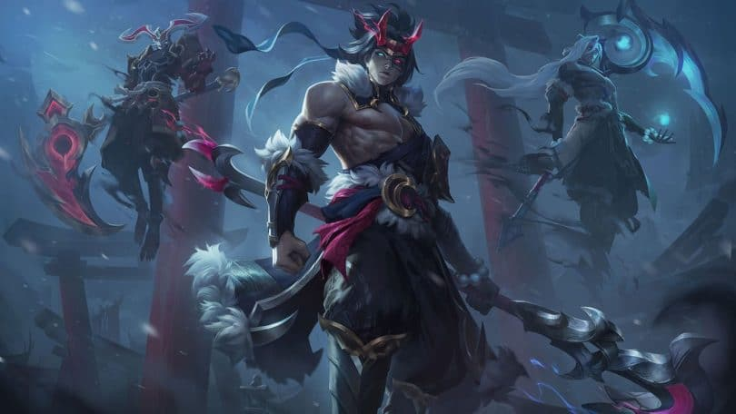

¡Buenas! Al habla Riot Brightmoon y Meddler. Venimos a charlar sobre nuestro vídeo de enero. Al contrario que en la mayoría de "Blogs de los desarrolladores", no os marearemos con un artículo meticulosamente editado y concisos encabezados, sino que os traemos un resumen del vídeo que hemos publicado hoy por si preferís leerlo a verlo: Vamos a publicar más vídeos con un menor valor de producción, en los que aparecerán diferentes desarrolladores de LoL para hablar sobre temas importantes. También vamos a ponernos las pilas con las actualizaciones de los campeones y modos de juego más antiguos, lo que puede llegar a ralentizar el lanzamiento de nuevos campeones. Estamos intentando producir actualizaciones de ilustraciones y sostenibilidad (ASU) más rápido y, actualmente, estamos trabajando en las de Lee Sin y Teemo..
Suspendisse pulvinar, massa iaculis feugiat lobortis, dolor sapien vestibulum nulla, vel cursus tellus leo in lorem. Aliquam eu placerat urna. Suspendisse sed viverra orci, ut mattis neque. Fusce non ultrices nisi. In sagittis varius mollis. Quisque dolor quam, consectetur eu lacinia ac, ullamcorper vel arcu. Nullam mattis imperdiet nulla sed ornare. Praesent tristique, est id eleifend vestibulum, neque nibh condimentum ex, nec lobortis purus justo a libero. Phasellus id ex ac nunc hendrerit hendrerit. Nullam urna ipsum, rutrum at fringilla vel, venenatis non purus. Maecenas egestas ex vitae venenatis molestie. Ut et odio egestas, accumsan neque et, viverra nisl. Sed faucibus nec nulla sed imperdiet. Fusce quis sem ac urna semper tempor a id elit. Nulla fringilla vitae sapien a vehicula.
Pon a prueba Katamari Damacy REROLL, ¡el más reciente juego de muestra!
¡El aclamado juego arrollador está de regreso!
Del 20/2 a las 10:00 al 26/2 a las 23:59 (horario del Pacífico), los usuarios con suscripciones activas a Nintendo Switch Online* podrán descargar y poner a prueba la versión completa del juego Katamari Damacy REROLL sin costo adicional.
Cuando el Rey del Cosmos destruye accidentalmente todas las estrellas del firmamento, le ordena a su minúsculo príncipe (a ti) devolver el brillo al cielo. Únete al rey y al príncipe en su disparatada aventura para restaurar las estrellas, bien sea en el hogar o en el camino, ¡en alta definición!
Si decides adquirir el juego durante o después de finalizarse esta oferta, podrás conservar tus datos de guardado, así no tendrás que preocuparte por perder tu progreso. Como bonificación adicional, por tiempo limitado, ¡podrás comprar este título con un descuento del 85%! Apresúrate, esta oferta termina el 26/2 a las 23:59 (horario del Pacífico).
Visita el sitio oficial para obtener más información acerca del juego Katamari Damacy REROLL para la consola Nintendo Switch.
¡Obténpuntos de platino de My Nintendo!
¡Los suscriptores de Nintendo Switch Online podrán completar una misión y obtener 100 puntos de platino** con tan solo disfrutar de este juego de muestra! Para obtener más información, asegúrate de visitar la sección Misiones y recompensas de Nintendo Switch Online (en el menú HOME de tu consola Nintendo Switch).
It has an easy to override visual style, and is appropriately subdued.